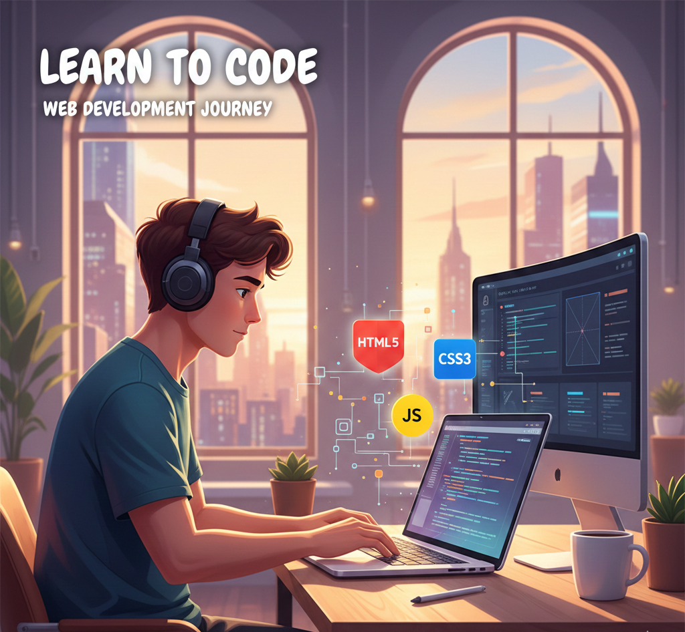

Dedicate at least 2 hours every day to coding. Even small daily practice, like building a button or debugging a bug, adds up. I personally started with 30-minute sessions and gradually increased to 2 hours, which made a huge difference!
Hi! Welcome to my little corner of the web. A few years ago, I had zero coding experience. Today, I’m building websites, learning new frameworks, and sharing my journey with you. If you’ve ever wanted to dive into web development, you’re in the right place!
I was always curious about websites, how they are made, and why some look amazing while others don’t. Web development gave me the perfect mix of creativity and logic, allowing me to turn ideas into real interactive experiences.
Over the years, I learned many tools and technologies. Here’s a snapshot:
My first project was a simple personal webpage using HTML & CSS. I made mistakes, debugged endlessly, and slowly improved. Then came JavaScript projects — like a small quiz app — that taught me how logic works in code. Finally, I explored React and WordPress, building interactive sites that I could actually share with friends and clients. Each step was a challenge, but that’s where the real learning happened!
Dedicate at least 2 hours every day to coding. Even small daily practice, like building a button or debugging a bug, adds up. I personally started with 30-minute sessions and gradually increased to 2 hours, which made a huge difference!
Working on real projects helps you understand practical challenges and boosts confidence. I started with small projects like a calculator, then moved to full websites.
Debugging is crucial. Each error is a lesson that strengthens problem-solving skills. Don’t fear mistakes — they are learning opportunities!
Web development evolves fast. Follow blogs, tutorials, and communities to stay current. Even 10 minutes a day reading updates keeps you ahead.
Web development is not just coding; it’s about creating experiences. "Learning to code is like learning a new language — patience and practice are your best friends."
If you’re starting your web development journey, start today! Even a small step can lead to amazing progress.
// Example JavaScript: Simple greeting
function greet(name) {
console.log("Hello, " + name + "!");
}
greet("Sharjeel");